Aphex Twin のシングル Windowlicker は印象的なジャケット
やクリスカニンガムのPVが有名ですが、2曲目に収録されている \(\Delta M_i^{-1} = - \alpha \sum_{n=1}^N D_i \left[ n \right] \left[ \sum_{j \in C \left[ i \right]}^{} F_{ji} \left[ n -1 \right] + Fext_i \left[ n^{-1} \right] \right]\) (通称 “Formula”) の楽曲データにRichard J James自身の顔が埋め込まれているということもよく知られた話だと思います。(顔が出てくるのは5:30~)
上の動画を見ればどんな画像が出てくるかわかるのですが、それでは面白くないので、今回は、CDからリッピングしたWAVファイルからJuliaを使って埋め込まれた顔を抽出してみたいと思います。
Juliaを含めてサウンドデータを扱ったことがあまりなかったので、今回はその練習も兼ねています。
Juliaの環境とインストールパッケージは下の通りです。
root@801256b1df16:/temp_julia# julia --project
_
_ _ _(_)_ | Documentation: https://docs.julialang.org
(_) | (_) (_) |
_ _ _| |_ __ _ | Type "?" for help, "]?" for Pkg help.
| | | | | | |/ _` | |
| | |_| | | | (_| | | Version 1.4.2 (2020-05-23)
_/ |\__'_|_|_|\__'_| | Official https://julialang.org/ release
|__/ |
(Hanauta) pkg> st
Project Hanauta v0.1.0
Status `/temp_julia/Project.toml`
[7a1cc6ca] FFTW v1.2.2
[82e4d734] ImageIO v0.2.0
[6218d12a] ImageMagick v1.1.5
[442fdcdd] Measures v0.3.1
[91a5bcdd] Plots v1.4.4
[8149f6b0] WAV v1.0.3
楽曲データは、所有しているCDをWAV形式でリッピングしたものを使います。
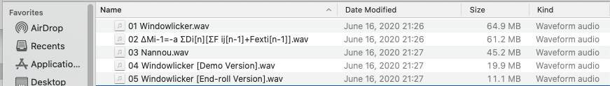
WAVファイルの読み込み
まずはデータを読み込んでみます。WAV形式のファイルフォーマットは WAV.jl で読み書きできます。
using WAV
# load wav
y, Fs, nbits, opt = wavread("wav/02 ΔMi-1=-a ΣDi[n][ΣF ij[n-1]+Fexti[n-1]].wav")
返り値は4つあり、最初のものはサンプリングデータです。2次元目のサイズが2なのはチャンネル数が二つあることに対応しています。
julia> y
15302700×2 Array{Float64,2}:
-9.15555e-5 -6.1037e-5
3.05185e-5 0.0
0.0 0.000183111
0.0 -0.000152593
-9.15555e-5 0.00021363
0.0 -6.1037e-5
-9.15555e-5 9.15555e-5
3.05185e-5 -3.05185e-5
⋮
-6.1037e-5 6.1037e-5
-3.05185e-5 -3.05185e-5
-6.1037e-5 3.05185e-5
-6.1037e-5 0.0
3.05185e-5 0.0
-0.000122074 3.05185e-5
9.15555e-5 0.0
-0.000152593 -3.05185e-5
2つ目はサンプリング周波数です。1秒あたりの標本化数を表しており、 サンプリングデータの長さをサンプリング周波数で割ると曲の長さ(6分47秒)になっています。
julia> Fs
44100.0f0
julia> size(y)[1] ÷ Fs
347.0f0
3つ目はサンプリングビット数を表しており、16ビットで量子化されていることがわかります。
julia> nbits
0x0010
julia> Int(nbits)
16
4つ目には WAVChank というデータが入っているようなのですが、使い方はよくわかりませんでした。
julia> opt
1-element Array{WAVChunk,1}:
WAVChunk(Symbol("fmt "), UInt8[0x10, 0x00, 0x00, 0x00, 0x01, 0x00, 0x02, 0x00, 0x44, 0xac, 0x00, 0x00, 0x10, 0xb1, 0x02, 0x00, 0x04, 0x00, 0x10, 0x00])
音楽CDの規格であるCD-DA では16ビット、44.1KHzでサンプリングされた2チャンネルのデータがCDには記録されていることになっているので、 先ほどリッピングしたWAVファイルのデータを読み込んだ時の情報と一致していますね。
データの可視化
Plots.jlを使って各チャンネルを可視化します。
using Plots
# channel 1
plot(y[1:1000:end, 1], title="ch1", label="")
savefig("ch1.png")
# channel 2
plot(y[1:1000:end, 2], title="ch2", label="")
savefig("ch2.png")
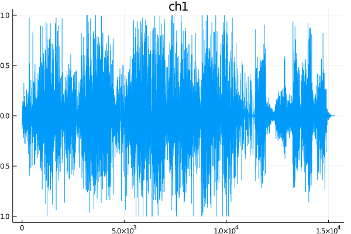
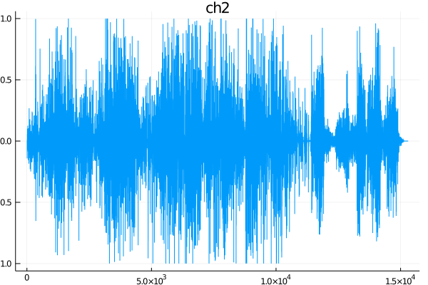
見ただけだと左右のチャンネルのズレはよくわからないですね。
縦波と横波
そもそもこの波形が何を表しているか分からなくなってしまったのですが、色々調べて 音は空気の密度の変化が振動して伝わっていくことによる縦波で、 縦波は可視化するのが難しいので、基準点からの媒質のずれを用いて横波に変換して表しているということを思い出しました。小学校か中学校で習いましたね。
xs = -2π:0.2:2π
plot(xs, sin.(xs), lw=2, label="y = sinx(x)")
plot!(xs .+ sin.(xs), lw=1, seriestype="vline", label="")
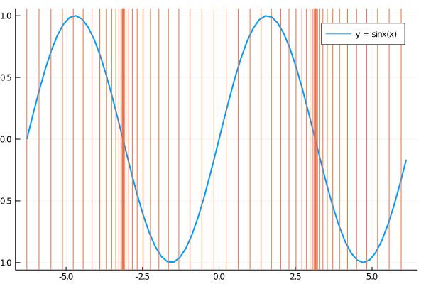
サイン波の場合、縦波 (オレンジ) と横波 (青) の関係を表すと上のようになり、 横波で値が0になっている点が縦波(疎密波)の疎と密になっている部分に対応しています。
離散フーリエ変換
離散フーリエ変換は標本点\(\{ x = 0, \ldots, N-1 \}\)に対し、関数\(f(x)\)を
$$ \begin{aligned} F(t) = \sum_{x=0}^{N-1} f(x) \exp \left(-i \frac{2\pi t x}{N} \right) \end{aligned} $$に写す変換です。
まずFFTW.jlを利用して \(f(x) = \sin(50 \cdot 2\pi \cdot x) + 0.5 \sin(80 \cdot 2\pi \cdot x)\) の離散フーリエ変換を求めてみます。scipy.fftのFourier Transformsのチュートリアルを参考にしています。
# Fourier transform
# https://docs.scipy.org/doc/scipy/reference/tutorial/fft.html
using FFTW
n_sample = 600
spacing = 1.0 / 800.0
xs = range(0.0, n_sample * spacing, length=n_sample)
ys = @. sin(50.0 * 2π * xs) + 0.5 * sin(80.0 * 2π * xs)
plot(xs, ys)
savefig("twosines.png")
# fft
yf = fft(ys)
xf = range(0.0, 1.0 / spacing, length=n_sample)
plot(xf, 2.0 / n_sample * abs.(yf), title="fft", label="")
savefig("twosines_fft.png")
# rfft
yf = rfft(ys)
xf = range(0.0, 1.0 / (2 * spacing), length=(n_sample ÷ 2))
plot(xf, 2.0 / n_sample * abs.(yf[1:end-1]), title="rfft", label="")
savefig("twosines_rfft.png")
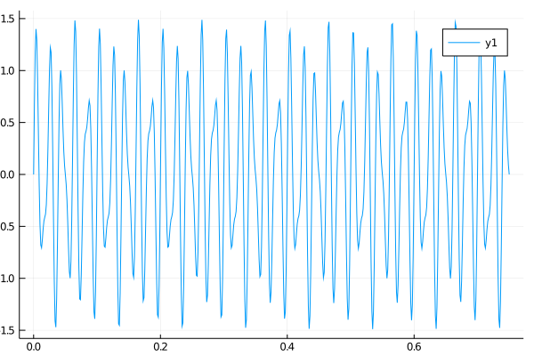
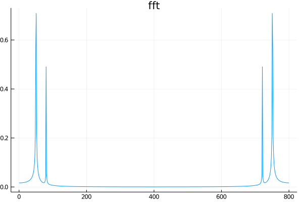
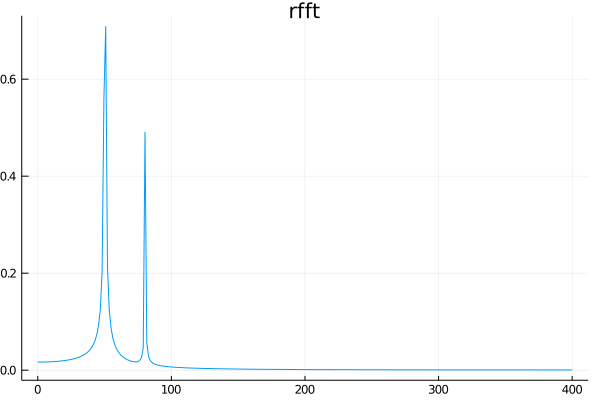
fftとrfftの違いですが、実数関数の高速フーリエ変換を行う場合は、得られる結果は複素共役になっているので
fftの最初の\(N/2+1\)個の要素だけ取り出したのがrfftです。今後はrfftを使っていきます。
julia> fft(ys)
1025-element Array{Complex{Float64},1}:
-0.021546067690054016 + 0.0im
-0.009144822218747824 + 0.019494434496893802im
-0.011255889003925152 - 0.0037747442427530035im
0.00021303373272217927 + 6.540910469289888e-6im
0.008011104229857957 - 0.004944446609708943im
-0.0027504905105466913 - 0.008521501761826233im
0.006452083992530002 - 0.002329259327304883im
0.0012487142795432917 - 0.00400665047994312im
⋮
0.0018973158062596494 - 0.0015495945378345682im
0.001248714279543291 + 0.0040066504799431205im
0.006452083992530002 + 0.0023292593273048835im
-0.0027504905105466965 + 0.008521501761826231im
0.008011104229857955 + 0.0049444466097089395im
0.00021303373272217938 - 6.540910469289725e-6im
-0.011255889003925153 + 0.0037747442427530026im
-0.009144822218747822 - 0.019494434496893802im
julia> rfft(ys)
513-element Array{Complex{Float64},1}:
-0.021546067690054016 + 0.0im
-0.009144822218747822 + 0.019494434496893802im
-0.011255889003925152 - 0.0037747442427530004im
0.00021303373272217986 + 6.54091046929146e-6im
0.008011104229857957 - 0.004944446609708941im
-0.002750490510546692 - 0.008521501761826231im
0.006452083992530001 - 0.0023292593273048826im
0.0012487142795432919 - 0.00400665047994312im
⋮
0.0005688670923895223 - 0.001286209219029025im
-0.00010711318682722653 - 0.00023560706166791262im
3.781279114026053e-5 - 0.00021509339265025993im
0.00045924223521861597 + 0.0002559596431659331im
3.076053805043007e-5 - 0.0003691736809030828im
0.0004897414415673067 + 0.00019917744535980088im
0.00020016708413113154 + 0.00021927127231187687im
5.662713730124005e-5 + 6.958061643819614e-5im
ハン関数
スペクトログラムを作成する際には、短時間フーリエ変換を行います。 楽曲の周波数の分析をする時には、楽曲データをオーバーラップさせながら一定の区間で区切り、取り出した区間をフーリエ変換します。
この際、区切った区間の値が周期的に繰り返されると仮定してフーリエ変換を行うのですが、勝手に選んだwindowの境界で繋がることは期待できないので、周囲で滑らかに0になるような関数をかけて境界で滑らかに繋がるようにします。
今回はハン関数(Hann function)を使うことにします。 サンプル数が \(N + 1\) のとき、ハン関数は
$$ \begin{aligned} w[n] = \frac{1}{2}\left[1 - \cos \left(\frac{2\pi n}{N}\right) \right] \end{aligned} $$で与えられます。
using Statistics
# Hann function
function hann(n_window)
ns = 0:n_window
xs_hann = @. 0.5 * (1 - cos(2π * ns / n_window))
xs_hann
end
plot(0:64, hann(64), title="Hann function (N=64)", label="")
savefig("hann_function.png")
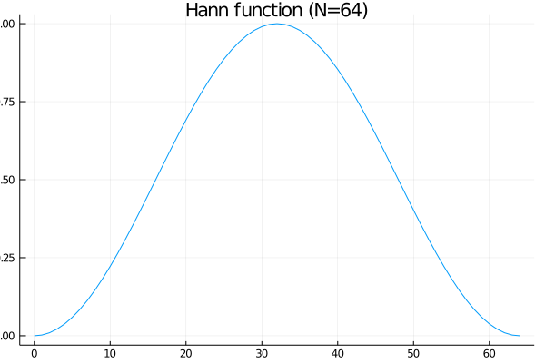
切り出したサンプルに対して適用してみるとこんな感じです。
window_size = 1024
xs = 1:window_size+1
signal = mean(y, dims=2)
ys = signal[xs]
ys_hann = hann(window_size) .* ys
plot(xs, ys, label="Original")
plot!(xs, ys_hann, label="Filtered")
savefig("filtered.png")
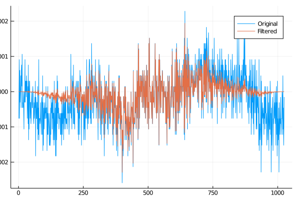
適用する前と後で得られるスペクトラムを比較すると、
xf = 1:(window_size ÷ 2 + 1)
yf = rfft(ys)
yf_hann = rfft(ys_hann)
plot(xf, 2.0 / window_size * abs.(yf), label="Original")
plot!(xf, 2.0 / window_size * abs.(yf_hann), label="Filtered")
savefig("rfft_hann.png")
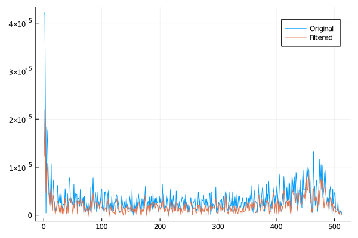
ハン関数を適用した方が全体的にノイズが低減されているように見えます。
いよいよスペクトログラムを描く
# spectrogram
using Measures
function spectrogram(window_size, signal)
overlap = window_size ÷ 2
data = []
hann_window = hann(window_size)
for idx in 1:(window_size - overlap):Base.length(signal)
if idx + window_size > Base.length(signal)
break
end
rfft_result = rfft(hann_window .* signal[idx:idx + window_size])
rfft_log = abs.(rfft_result) .^ 2
push!(data, rfft_log)
end
hcat(data...)
end
data = spectrogram(window_size, signal)
heatmap_data = log.(data[:, end-2000:end-800])
heatmap(heatmap_data, margin=5mm)
savefig("spectrogram_formula.png")
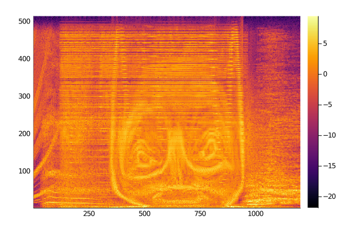
うーん、なんか見た目が微妙ですね。y軸を対数軸にすると
heatmap(heatmap_data, margin=5mm, yaxis=:log)
savefig("spectrogram_formula_log.png")
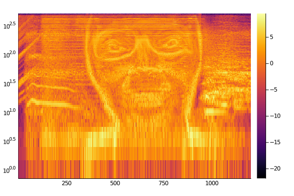
となりようやく「顔」に対面できました。
ついでに1曲目のWindowlickerに隠されている螺旋模様も見ましょう。
# windowlicker
y, Fs, nbits, opt = wavread("wav/01 Windowlicker.wav")
signal = mean(y, dims=2)
data = spectrogram(window_size, signal)
heatmap_data = log.(data[:, end-900:end-200])
heatmap(heatmap_data, margin=5mm, yaxis=:log)
savefig("windowlicker_log.png")
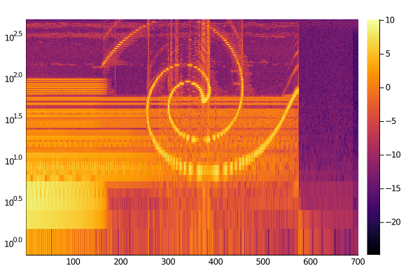
今回は以上です。